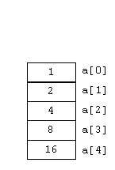
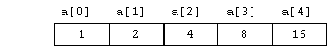

int a[5]; // Allocates memory for 5 ints.
. . .
a[0] = 1;
for (int i=1; i<5; i++) {
a[i] = a[i-1] * 2;
}
Arrays are often represented with diagrams that represent their memory use. The diagram below is one typical way to represent the memory used by an array.
Each box represents the amount of memory needed to hold one array element. For ints this is usually 4 bytes. We can write the value of an element inside the box. Pointers hold the memory address of other data and are represented by a black disk with an arrow pointing to the data it references.
The actual array variable, a in this example, is
a pointer to the memory for all of its
elements.
A common shortcut is to omit writing the array variable,
and write only the elements that hold the data because these are
usually the focus of attention. Sometimes the cells are written horizontally,
especially when showing C-strings (arrays of chararcters).
|
|
or simply |  |
or just
